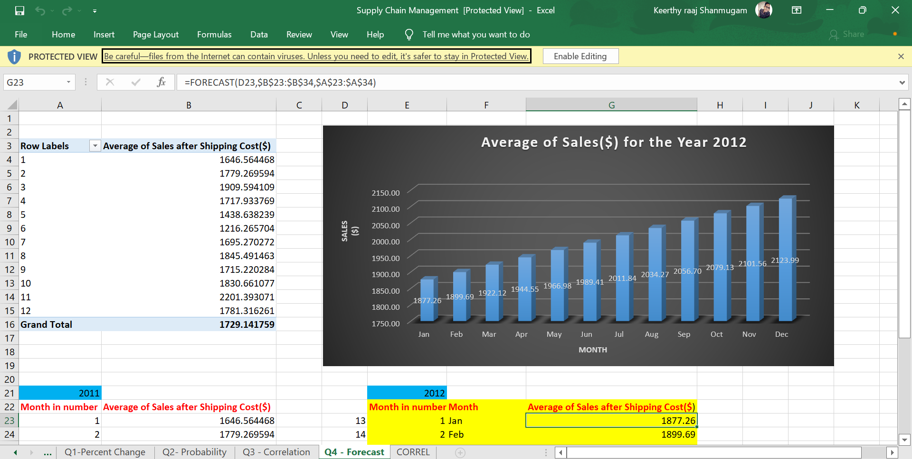
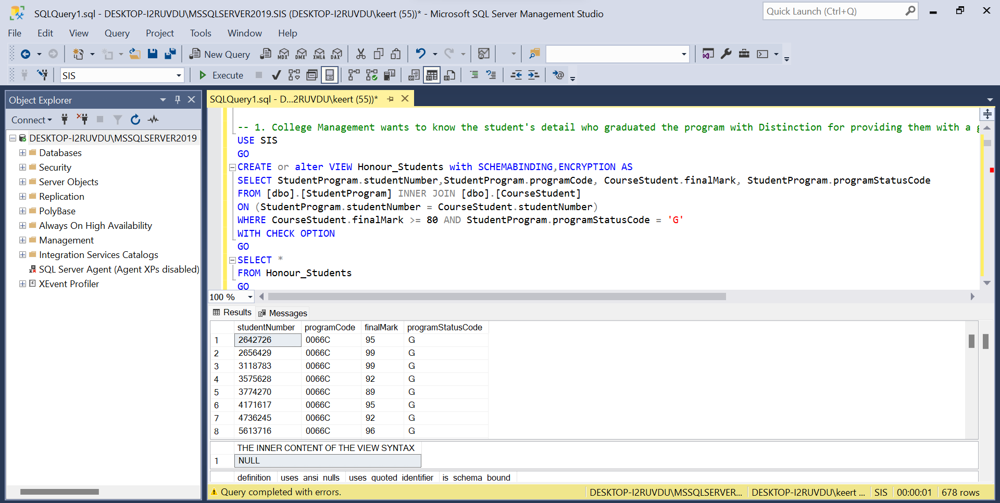
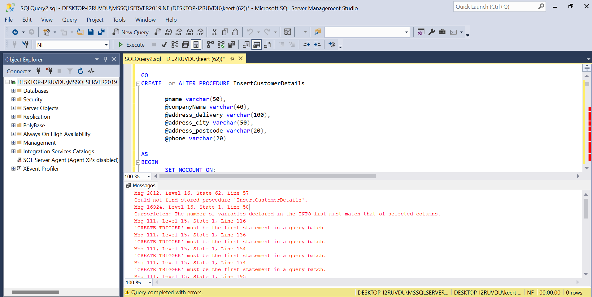
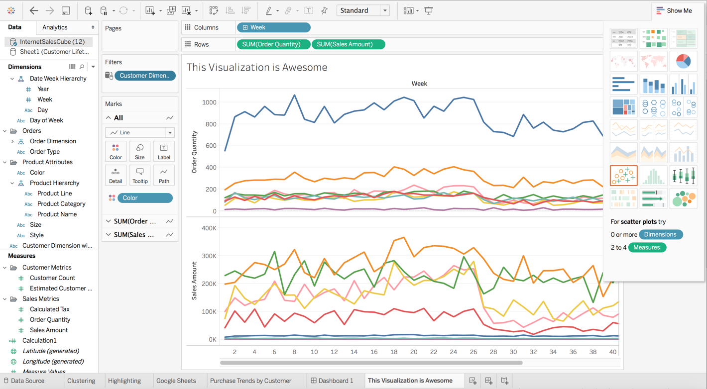
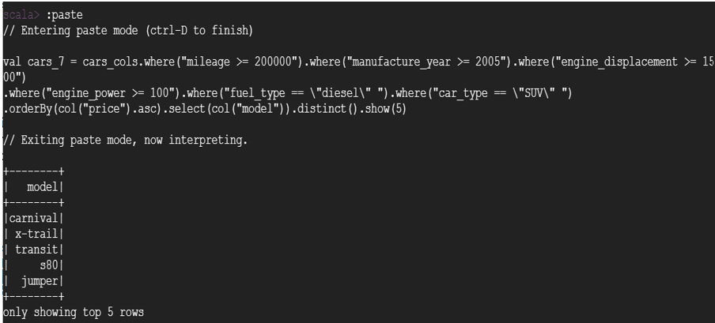

Projects

ANALYSIS ON SUPPLY CHAIN MANAGEMENT DATA
Microsoft Excel
Cleaned, categorized, and derived variables using conditional statements (IF, IF-ELSE) and reference function (VLOOKUP). Performed Exploratory Data Analysis and did sales forecast for the following year using the current year’s sales data. And generated KPI metrics using charts and Pivot tables.

ENFORCEMENT OF EMPLOYEE BUSINESS RULES USING VIEWS
SQL
Created business rules and implemented them as the corresponding multi-table database views by applying appropriate table join view options and crosstabs. Finally, Checked the performance efficiency by running necessary manual testing statements.

AMALGAMATION OF DATABASES
SQL
Amalgamated two databases and increased performance efficiency by using Nested Triggers, and Stored Procedures. Performed Error handling of Stored Procedures using an Exceptional Handling routine.

ETL OF TWEETS THROUGH TWITTER API
Python | MongoDB | HTML
Created a web application that performed an end-to-end pipeline to extract tweets based on the given keyword using Twitter API and transformed the tweets for the analysis using python and finally loaded it to MongoDB Atlas.

TEMPERATURE FORECAST USING TIME-SERIES ANALYSIS
R Programming
Performed fundamental time series analysis for describing and forecasting temperature for the following year using the Woodstock and Ayr dataset which contains the average temperature of the cities by month collected over the years.

INTERACTIVE COVID -19 DASHBOARD
Microsoft Power BI
Fetch from live data sources, and modify the query in such a way that the data will refresh automatically on a daily basis. Also, did the necessary Data Modelling and transformations and reported the KPI ( Key Performance Indicator ) metrics as multiple visualizations in Power BI.

DATA STORYTELLING USING UDEMY'S DATASET
Tableau
Fetched Udemy's dataset from Kaggle containing course details for all categories. Created dynamic visuals showing popular trending courses, and customer buying patterns and presented the potential courses to invest in. Finally, presented the insights found as a new and innovative data storytelling format using Tableau.

RESALE VALUE ANALYSIS OF CARS USING SPARK DATAFRAMES
GCP | HDFS | Apache Spark
The Cars dataset was taken from Kaggle which was web scraped for more than a year in the Czech Republic and Germany from different web pages. The dataset was cleaned and analyzed using Spark Dataframes. The analysis was done to predict and determine the resale value of commercial and personal use cars.

SENTIMENT ANALYSIS AND EMOTION DETECTION OF COVID-19 TWEETS
Python | Hugging Face
Used Python to access Hugging Face, an open-source platform, built-in python, that has pre-trained Natural Language Processing (NLP) models, and performed Sentiment Analysis and Emotion detection behind the covid-19 tweets to get to know the mental state of people during the Covid-19 pandemic.
Certifications
Google Data Analytics
Google
SQL for Data Science
University of California
Machine Learning
Stanford University
Applied Analytics Using SAS Enterprise Miner
SAS
Contact me
Get in Touch
Name
Keerthy Raaj Shanmugam
Email
keerthyraaj@gmail.com
Mobile Number
+1 (613) 263-5952